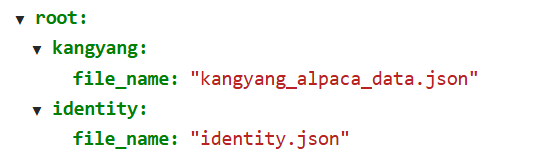
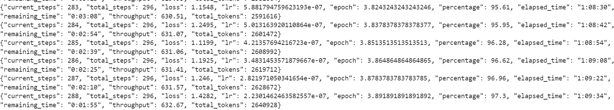
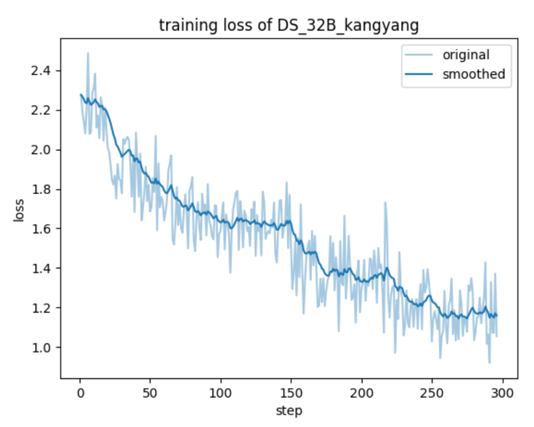

在ModelArts平台使用LLama Factory微调模型简单示例
准备notebook服务
- 注册镜像
在HCS Online-> ModelArts -> 镜像管理 -> 注册镜像 进行镜像的注册
需要注册的镜像为：swr.cn-north-300.hblfrgzn.com/vision/llama-factory-qwen2_5-70b:new；
- 创建notebook服务
notebook创建的时候，选择镜像 swr.cn-north-300.hblfrgzn.com/vision/llama-factory-qwen2_5-70b:new
准备源码
进入创建好的notebook，在默认路径下（/home/ma-user/work)
下载LLaMA-Factory
git clone https://github.com/hiyouga/LLaMA-Factory.git
获取DeepSeek-R1-Distill-Qwen-32B
第一种方法:
利用 huggingface-cli, Hugging Face 官方提供的命令行工具
安装依赖pip install -U huggingface_hub
设置环境export HF_ENDPOINT=http://hf-mirror.com
使用命令huggingface-cli download deepseek-ai/DeepSeek-R1-Distill-Qwen-32B
若你在本地的主机上已经有了该模型, 不想使用huggingface镜像的不稳定服务, 可以尝试第二种方法
第二种方法:
使用 华为云的对象存储服务OBS
在HCS Online -> 对象存储服务OBS -> 创建桶
然后在对象存储服务OBS 页面找到“获取访问密钥(AK和SK)” 在临时访问密钥中创建并记住AK, SK, STS Token
在本地主机安装依赖pip install esdk-obs-python
参考上传OBS脚本, 将其中的AK, SK, STSToken和实际模型参数文件名换为你的:
from obs import ObsClient, CompleteMultipartUploadRequest, CompletePart
import os
import traceback
# 配置信息
ak = '你的AK'
sk = '你的SK'
security_token = '你的STSToken'
server = 'https://obs.cn-north-300.hblfrgzn.com'
bucket_name = '你的桶名'
# 假设你的模型参数文件名为DeepSeek-R1-Distill-Qwen-32B.tar.gz
object_key = 'DeepSeek-R1-Distill-Qwen-32B.tar.gz'
file_path = 'DeepSeek-R1-Distill-Qwen-32B.tar.gz'
# 创建ObsClient实例
obs_client = ObsClient(
access_key_id=ak,
secret_access_key=sk,
security_token=security_token,
server=server,
is_secure=True
)
def upload_large_file():
try:
# 检查是否存在
if not os.path.exists(file_path):
print(f"文件不存在: {file_path}")
return
# 初始化分段上传
print("初始化分段上传任务...")
resp = obs_client.initiateMultipartUpload(bucket_name, object_key)
if resp.status >= 300:
print(f"初始化分段上传失败: {resp.errorCode} - {resp.errorMessage}")
return
upload_id = resp.body.uploadId
print(f"Upload ID: {upload_id}")
# 设置分段大小（1GB）
part_size = 1024 * 1024 * 1024 # 1GB
file_size = os.path.getsize(file_path)
offset = 0
part_num = 1
etags = {}
# 逐个上传
while offset < file_size:
current_part_size = min(part_size, file_size - offset)
try:
print(f"上传分段 {part_num}...")
resp = obs_client.uploadPart(
bucket_name, object_key, part_num, upload_id, file_path,
isFile=True, partSize=current_part_size, offset=offset
)
if resp.status >= 300:
print(f"上传分段 {part_num} 失败: {resp.errorCode} - {resp.errorMessage}")
break
etags[part_num] = resp.body.etag
print(f"分段 {part_num} 上传成功. ETag: {resp.body.etag}")
except Exception as e:
print(f"上传分段 {part_num} 时发生异常: {e}")
break
offset += current_part_size
part_num += 1
# 完成
if part_num > 1:
complete_parts = [CompletePart(i, etags[i]) for i in range(1, part_num)]
complete_request = CompleteMultipartUploadRequest(parts=complete_parts)
print("完成分段上传...")
resp = obs_client.completeMultipartUpload(bucket_name, object_key, upload_id, complete_request)
if resp.status < 300:
print('文件上传成功！')
print('ETag:', resp.body.etag)
else:
print('文件上传失败！')
print('错误码:', resp.errorCode)
print('错误信息:', resp.errorMessage)
else:
print("没有分段上传成功，取消分段上传任务...")
obs_client.abortMultipartUpload(bucket_name, object_key, upload_id)
print('上传失败，已取消分段上传任务。')
except Exception as e:
print('上传过程中发生错误：')
print(traceback.format_exc())
finally:
# 关闭ObsClient
obs_client.close()
if __name__ == "__main__":
upload_large_file()
至此你在本地上的模型文件就上传到华为的OBS桶内了
在notebook环境中同样安装esdk-obs-python, 执行该脚本获取你在桶内的文件:
from obs import ObsClient
import traceback
import os
ak = '你的AK'
sk = '你的SK'
security_token = '你的STSToken'
server = 'https://obs.cn-north-300.hblfrgzn.com'
bucket_name = '你的桶名'
# 假设你的模型参数文件名为DeepSeek-R1-Distill-Qwen-32B.tar.gz
object_key = 'DeepSeek-R1-Distill-Qwen-32B.tar.gz'
file_path = 'DeepSeek-R1-Distill-Qwen-32B.tar.gz'
obs_client = ObsClient(
access_key_id=ak,
secret_access_key=sk,
security_token=security_token,
server=server,
is_secure=True
)
def download_large_file():
try:
resp = obs_client.downloadFile(
bucketName=bucket_name,
objectKey=object_key,
downloadFile=download_path,
partSize=1024*1024*1024,
taskNum=10,
enableCheckpoint=True
)
if resp.status < 300:
print("OK", download_path)
except Exception as e:
traceback.print_exc()
finally:
obs_client.close()
if __name__ == "__main__":
download_large_file()
notebook在OBS桶中下载文件的速度极快
配置环境
配置notebook中的环境, 使其可以运行LLaMA-Factory
cd LLaMA-Factory
pip install -e ".[metrics]"
开始LoRA微调
使用 llamafactory-cli 命令行工具 快速开始模型微调
LLaMA-Factory目录下的examples/train_lora中创建yaml文件deepseek_qwen_lora_sft.yaml
内容为:
model_name_or_path: /home/ma-user/work/DeepSeek-R1-Distill-Qwen-32B
stage: sft
do_train: true
finetuning_type: lora
lora_target: all
deepspeed: examples/deepspeed/ds_z3_offload_config.json
include_num_input_tokens_seen: true
dataset: identity, kangyang
template: qwen
cutoff_len: 1024
max_samples: 5000
overwrite_cache: true
preprocessing_num_workers: 16
output_dir: DS_32B_kangyang
logging_steps: 1
save_steps: 100
plot_loss: true
overwrite_output_dir: true
per_device_train_batch_size: 4
gradient_accumulation_steps: 1
learning_rate: 1.0e-4
num_train_epochs: 4.0
lr_scheduler_type: cosine
warmup_ratio: 0.1
fp16: true
ddp_timeout: 180000000
val_size: 0.1
per_device_eval_batch_size: 1
eval_strategy: steps
eval_steps: 500
将alpaca格式json数据集kangyang_alpaca_data.json和自定义的identity.json(如果要改变模型认知)放入LLaMA-Factory目录下的data目录中, 并修改dataset_info.json文件, 在其中加入这两个数据集, 像这样: 
开始微调
退回到LLaMA-Factory目录下, 执行
llamafactory-cli train examples/train_lora/deepseek_qwen_lora_sft.yaml
开始微调, adapter将会在LLaMA-Factory目录下的DS_32B_kangyang目录中
部分log截图: 
loss图像:

合并文件
因为部署是要用到MindIE, 在这里需要将权重文件和原模型文件合并
LLaMA-Factory目录下的examples/merge_lora中创建yaml文件deepseek.yaml
model_name_or_path: /home/ma-user/work/DeepSeek-R1-Distill-Qwen-32B
adapter_name_or_path: /home/ma-user/work/LLaMA-Factory/DS_32B_kangyang
template: qwen
finetuning_type: lora
trust_remote_code: true
export_dir: models/DS_32B
export_size: 2
export_device: cpu
export_legacy_format: false
在LLaMA-Factory下执行llamafactory-cli export examples/merge_lora/deepseek.yaml
结果将在LLaMA-Factory下的models/DS_32B
用上面提到的OBS方法可以把结果从notebook环境中下载下来